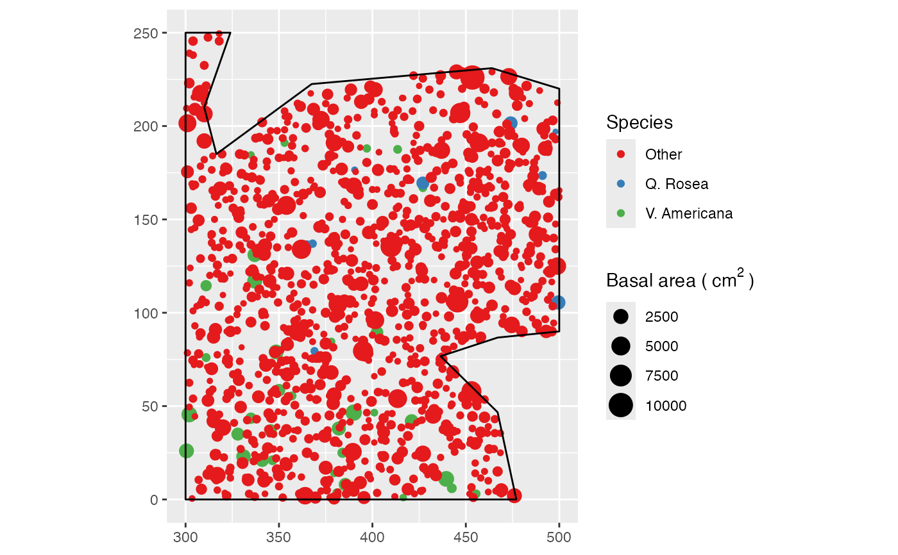
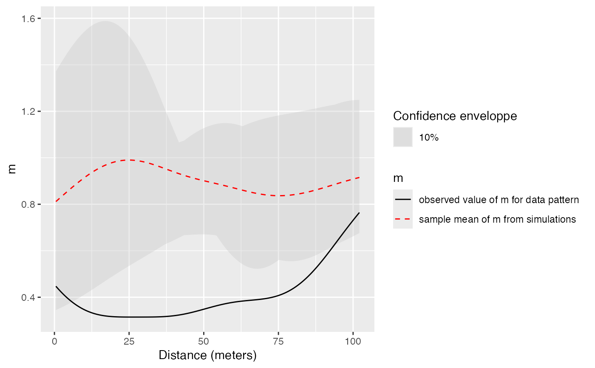

Estimation of the confidence envelope of the m function under its null hypothesis
m_Envelope.RdSimulates point patterns according to the null hypothesis and returns the envelope of m according to the confidence level.
Usage
mEnvelope(X, r = NULL, NumberOfSimulations = 100, Alpha = 0.05,
ReferenceType, NeighborType = ReferenceType, CaseControl = FALSE,
Original = TRUE, Approximate = ifelse(X$n < 10000, 0, 1), Adjust = 1,
MaxRange = "ThirdW", SimulationType = "RandomLocation", Global = FALSE,
verbose = interactive())Arguments
- X
A point pattern (
wmppp.object).- r
A vector of distances. If
NULL, a default value is set: 512 equally spaced values are used up to the median distance between points (following Duranton and Overman, 2005).- NumberOfSimulations
The number of simulations to run, 100 by default.
- Alpha
The risk level, 5% by default.
- ReferenceType
One of the point types.
- NeighborType
One of the point types, equal to the reference type by default to caculate univariate M.
- CaseControl
Logical; if
TRUE, the case-control version of M is computed. ReferenceType points are cases, NeighborType points are controls.- Original
Logical; if
TRUE(by default), the original bandwidth selection by Duranton and Overman (2005) following Silverman (1986: eq 3.31) is used. IfFALSE, it is calculated following Sheather and Jones (1991), i.e. the state of the art. Seebw.SJfor more details.- Approximate
if not 0 (1 is a good choice), exact distances between pairs of points are rounded to 1024 times
Approximatesingle values equally spaced between 0 and the largest distance. This technique (Scholl and Brenner, 2015) allows saving a lot of memory when addressing large point sets (the default value is 1 over 10000 points). IncreasingApproximateallows better precision at the cost of proportional memory use.- Adjust
Force the automatically selected bandwidth (following
Original) to be multiplied byAdjust. Setting it to values lower than one (1/2 for example) will sharpen the estimation.- MaxRange
The maximum value of
rto consider, ignored ifris notNULL. Default is "ThirdW", one third of the diameter of the window. Other choices are "HalfW", and "QuarterW" and "D02005". "HalfW", and "QuarterW" are for half or the quarter of the diameter of the window. "D02005" is for the median distance observed between points, following Duranton and Overman (2005). "ThirdW" should be close to "DO2005" but has the advantage to be independent of the point types chosen asReferenceTypeandNeighborType, to simplify comparisons between different types. "D02005" is approximated by "ThirdW" ifApproximateis not 0.- SimulationType
A string describing the null hypothesis to simulate. The null hypothesis may be "RandomLocation": points are redistributed on the actual locations (default); "RandomLabeling": randomizes point types, keeping locations and weights unchanged; "PopulationIndependence": keeps reference points unchanged, randomizes other point locations.
- Global
Logical; if
TRUE, a global envelope sensu Duranton and Overman (2005) is calculated.- verbose
Logical; if
TRUE, print progress reports during the simulations.
Details
This envelope is local by default, that is to say it is computed separately at each distance. See Loosmore and Ford (2006) for a discussion.
The global envelope is calculated by iteration: the simulations reaching one of the upper or lower values at any distance are eliminated at each step. The process is repeated until Alpha / Number of simulations simulations are dropped. The remaining upper and lower bounds at all distances constitute the global envelope. Interpolation is used if the exact ratio cannot be reached.
Value
An envelope object (envelope). There are methods for print and plot for this class.
The fv contains the observed value of the function, its average simulated value and the confidence envelope.
References
Duranton, G. and Overman, H. G. (2005). Testing for Localisation Using Micro-Geographic Data. Review of Economic Studies 72(4): 1077-1106.
Kenkel, N. C. (1988). Pattern of Self-Thinning in Jack Pine: Testing the Random Mortality Hypothesis. Ecology 69(4): 1017-1024.
Lang G., Marcon E. and Puech F. (2014) Distance-Based Measures of Spatial Concentration: Introducing a Relative Density Function. HAL 01082178, 1-18.
Loosmore, N. B. and Ford, E. D. (2006). Statistical inference using the G or K point pattern spatial statistics. Ecology 87(8): 1925-1931.
Marcon, E. and F. Puech (2017). A typology of distance-based measures of spatial concentration. Regional Science and Urban Economics. 62:56-67.
Scholl, T. and Brenner, T. (2015) Optimizing distance-based methods for large data sets, Journal of Geographical Systems 17(4): 333-351.
Silverman, B. W. (1986). Density estimation for statistics and data analysis. Chapman and Hall, London.
Examples
data(paracou16)
# Keep only 50% of points to run this example
X <- as.wmppp(rthin(paracou16, 0.5))
autoplot(X,
labelSize = expression("Basal area (" ~cm^2~ ")"),
labelColor = "Species")

# Calculate confidence envelope (should be 1000 simulations, reduced to 4 to save time)
NumberOfSimulations <- 4
Alpha <- .10
autoplot(mEnvelope(X, , NumberOfSimulations, Alpha,
"V. Americana", "Q. Rosea", Original = FALSE, SimulationType = "RandomLabeling"))
